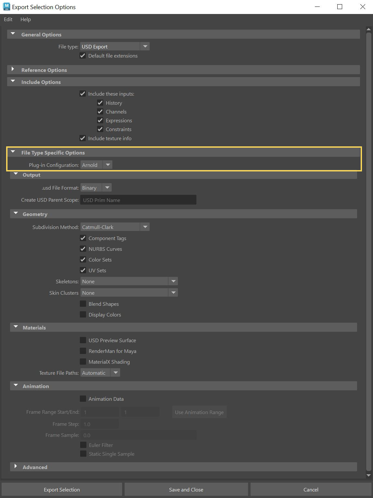
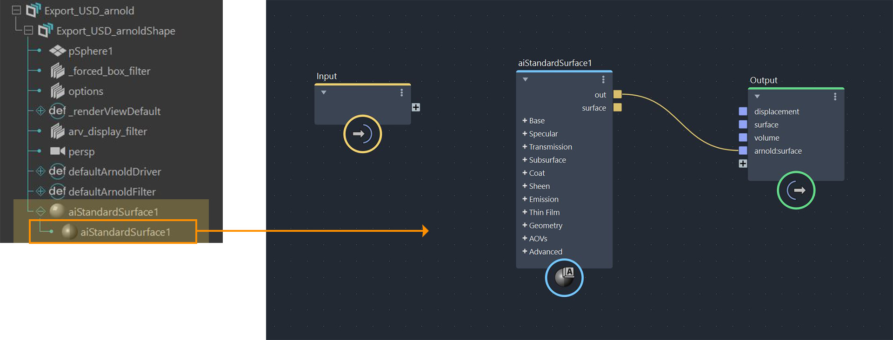
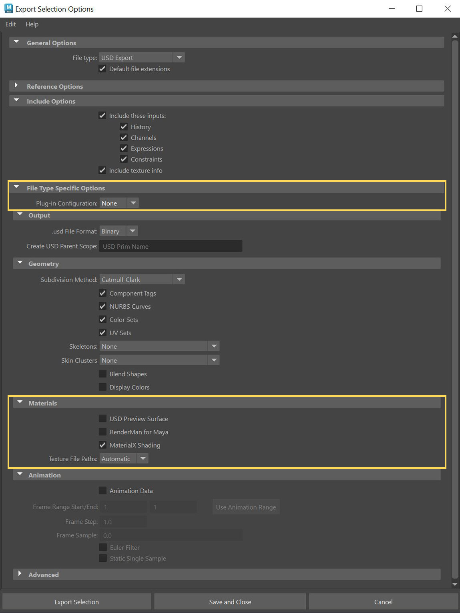
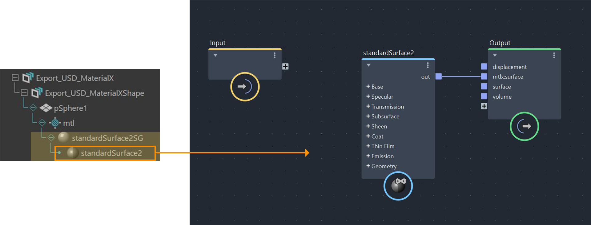

USD (Universal Screen Description) is an open-source file format created by Pixar that can store and exchange data between products. This allows for seamless cross-collaboration between teams all working on the same USD layers. LookdevX requires a USD stage for its operation. If you are not yet familiar with USD you can start here:
Learn how to create a USD stage in Maya.
Some commonly used terms in USD (Prim, Stage, Layer, etc.).
You can export materials created in Maya to the USD format, with options to use Arnold, MaterialX or USD preview surface shaders:
Select the object in the Outliner that has the assigned materials > File > Export Selection. The Export Selection Options window appears.
Select USD Export for the file type under General Options.
To export them as Arnold shaders, select Arnold for the Plugin Configuration under the File Type Specific Options.

When you open the exported USD file, the material appears in the Outliner as indicated in the screenshot below. You can then access and edit this material in LookdevX.

To export them as MaterialX shaders, apply the following settings:

Similar to Arnold shaders, the material is listed in the Outliner when you open the exported USD file, as shown in the screenshot below. This material is accessible and editable within LookdevX.

Watch this tutorial for more information about exporting USD objects.